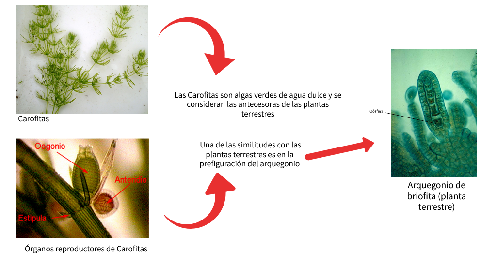

Embrión no protejido..... Algas Charophyta (Carofitas)

© CIIDEPT–2022
© CIIDEPT–2022
- Desarrollo de la cutícula, capa protectora que recubre su superficie e impide la pérdida de agua la volvió impermeable, esa fue su primera estrategia de adaptación hace 400 millones de años.
- Desarrollo de la esporopolenina que forma una gruesa pared en la espora protegiéndola.
- El contacto con el aire se logra a través de pequeños poros en la epidermis llamados estomas
- Desarrollo del tejido vascular
- Transformación de rizoides (organos de sujeción) en un sistema radicular (función sujeción y absorción de agua y minerales)
- Para sobrellevar la alta concentración de oxígeno atmosférico (mucho más alta que en el agua), ya que demasiado oxígeno inhibe la fijación de dióxido de carbono, el metabolismo incluye un sistema de oxidación del glicolato (fotorrespiración).
- Como protección contra la radiación ultravioleta, que es más intensa fuera del agua, se desarrollaron los flavonoide